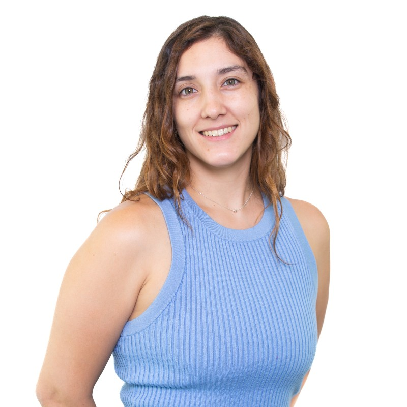

Diseñadora e Ingeniera Informática
Soy Diseñadora de la Universidad Adolfo Ibáñez e ingeniera informática de Duoc UC y busco mezclar ambas áreas en el ámbito laboral.
Duoc UC (2021 - 2024)
Duoc UC (2020)
Universidad Adolfo Ibáñez (2018)
Universidad Adolfo Ibáñez (2013 - 2017)
Definir y establecer la imagen del sitio www.smartycar.cl...
Asistente de soporte en mesa de ayuda...
Diseño y planificación de campañas de marketing...
Diseño de material gráfico para clientes...